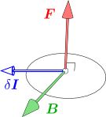

2. 定常電流のアンペール力
アンペール力：電流が流れている導線同士の間に働く力。
運動する電荷に働く力：ローレンツ力
前章では、電荷に働くクーロン力を扱った。これで電荷の運動が決まるかというと、実はまだ足りない。電荷に働く力にはこのクーロン力以外に、電荷の速度に依存するようなローレンツ力と呼ばれる力が存在する。しかし、ローレンツ力は非常に小さいので、帯電した物体を実際に動かして測定することは難しい。
そこで、まずは電流の説明から始めることにする。というのも、電流の中では多量の電荷が動いているので、ローレンツ力が測定しやすいのである。実際これは、導線同士の間に働く力（アンペール力）として容易に観測できる。ローレンツ力に至る準備として、この章では、このアンペール力を定量化する。
2.1
電流・電圧・抵抗
まず、電子回路を用いて電流などの概念を導入する。電磁力学の主要なテーマではないので、簡略化して軽く触れるだけにする。
電池

電流を発生させるための典型的な装置は、電池である。単純な電池としては、右図のように、電解液（飽和食塩水）に銅と亜鉛を浸けて導線を繋いだものがある（ボルタ電池）。市販されている乾電池はこれを改良したものである。。
銅の側を正極、亜鉛の側を負極と言い、それぞれ「＋」と「－」で表す（同図赤色部分）。この符号は、電解液中のイオンの移動方向から決まっており、正極は、陽イオンを引きつける側である。電流の流れる向きは、正極→負極と定義する（同図青色矢印）。
電流・電圧・電気抵抗

右図のように、電源（電池）に豆電球を繋いだ回路を考える。基準となる回路(A)に対し、電池を2つ直列につないだもの(B)はより明るくなり、豆電球を2個直列につないだもの(C)はより暗くなる。
これを見ながら、電流・電圧・電気抵抗を以下のように直観的に導入する：
-
電流：導線を切断すると、電球は光らなくなるので、導線中を何かが流れていると思われる。この流れを電流といい、電球が明るいほど大きな電流が流れているとみなす。図の例でいえば、電流の大きさは(C)<(A)<(B)の順になる。
-
電圧：電源は、電流を流すための装置であり、「圧力」のようなものを生み出すと考えられる。その「圧力」のことを電圧という。電圧が大きいほど、電流も大きくなる。例えば図中の(B)では、電池を2つ直列につなぐことで電圧が大きくなり、電流も大きくなる（豆電球は明るくなる）。
-
電気抵抗：電球のフィラメントなどが持つ、電流の流れを妨げる作用のことである。大きいほど電流が流れにくくなる。例えば図中の(C)では、抵抗器（ここでは豆電球）を直列につなぐと電気抵抗が大きくなり、電流が小さくなる（豆電球は暗くなる）。
オームの法則(1)による定量化

次に、電流・電圧・電気抵抗の定量化を考える。右図の(D)は、電池・豆電球を2つ並列に繋いだものである。この時、（A)と（B)の豆電球の明るさは同じになる。これは以下のように解釈できる：(D)では、電圧
V
が2倍になって電流
I
を大きくしようとするが、抵抗
R
も2倍になって電流を妨げるため、結局これらの効果が打ち消し合って、電流
I
は(A)と同じになる（明るさも同じになる）。
このことは、電流
I
・電圧
V
・電気抵抗
R
を定量化する際、
I
が
V/R
に比例する、即ち
V=RI(1)
という関係式（オームの法則）が成り立つように定量化できることを示唆している。そして実際、それが可能であることが知られている。
上述のとおり、電圧・抵抗の値は、直列につないだときに加法性を持つように定量化すればよい。このように定量化した電圧をボルトと言い
[V]
で表す。同様に、電気抵抗はオームと言い
[Ω]
で表す。ただし、定量化を完了するには、
1[V]
や
1[Ω]
がどこにあるのかを決める必要である。詳しくは述べないが、例えば、電圧については前述のボルタ電池が
0.8[V]
程度、抵抗については銅線（断面積が
1[mm2]
，長さ
1[m]
，
20[∘C]
とする）が
0.017[Ω]
程度になるようなスケールになっている。豆電球の抵抗は
5[Ω]
程度である。
電流の値
I
については、オームの法則(
1)により、
I=V/R
と定義すればよい。電流の単位はアンペールと言い
[A]
で表す。例えば、電池に豆電球をつないだ時の電流は
0.3[A]
程度になる。
なお、電流の定量化としては、オームの法則とは独立に行うことも可能である。例えば、硝酸銀水溶液は電流を通すのだが、この時、電極には銀が析出する。これを用いて、単位時間当たりの銀の析出量に比例するように電流を決めることもできる。あるいは、次節のアンペール力に比例するように決めてもよい。どの定義も互いに等価である。
2.2
電流同士に働く力：アンペール力
電流が流れている導線同士の間には、電流に比例する力が働くことが知られている。アンペール力と呼ばれるこの力を定量化する。
平行電流に働くアンペール力は、式(2)

電流間に働く力を考えるために、まず最も単純な場合、即ち、2本の導線が平行である場合を扱う。容易に実験を行うことができ、アンペール力のの向きは右図のように、電流の方向が揃っている場合には引力、逆向きの場合には斥力になる。また、アンペール力の大きさについては、互いに等しくなる（これは作用反作用の法則から言っても自然である）。アンペール力は、普通の乾電池を用いて確認できる程度の大きさになる。
アンペール力
F
の大きさについては、導線
l[m]
につき、以下のようになる：
F=2kAlI1I2rkA=10−7[N⋅A−2](2)
ただし、
r
は2本の平行電流の間の距離、
I1
と
I2
はそれぞれの電流の大きさである。アンペール力
F
は電流に比例し、導線間の距離に反比例するのである。また、アンペール力は導線の長さに比例する。
なお、係数から2を括り出しているのは、後の式(5)の係数をきれいにするためである。
式(2)の比例係数
2kA
はきりの良い値になっているが、実際、これは厳密な値である。というのも、国際的に決められた電流の単位の定義が、この式(2)を用いてなされているからである（国際単位系、2017年現在）。即ち、「同じ大きさの電流が流れる2本の直線電流を
1[m]
離して置いた時、導線
1[m]
当たりのアンペール力が
2×10−7[N]
である」時、その電流の大きさを
1[A]
とするのである。
磁場
B
を用いたアンペール力：式(3)
これまでは平行電流の場合を考えたが、ここからは一般的な形状の場合を扱う。

点
x
に電流要素
δI
があるとする。ただし、
δI
はベクトルであり、「電流の方向を向き、大きさは電流の大きさと要素の長さの積になるもの」とする（アンペール力は
δI
の大きさに比例するようになっている）。この
δI
が、別の電流から受けるアンペール力を測定する。原理的には右図のように、太い導線の上に、自由にスライドする軽い導線（青色部分、これが電流要素になる）を乗せたような装置を用いて、電流要素がどのような力を受けるかを測定することにより、アンペール力が決定できる。

このような測定を繰り返すと、アンペール力
F
の向きについて、右図のように「
F
は、
δI
およびある方向
B
に垂直」となることが分かる。よって、クロス積を用いて
F=δI×B(3)
となるようなベクトル
B
が存在する。
B
は、
δI
には依存しないが座標
x
に依存する。この
B(x)
を磁場という。アンペール力の加法性により、磁場
B(x)
も加法性を持つ（＝電流が複数ある場合、各々の電流が作る磁場を足し合わせたものが実際の磁場になる）。
後は、電流から、磁場
B(x)
を与える法則が分かればよい。もちろん、直線電流の場合のアンペール力(
2)を再現しなければならない。
一般の形状の電流場作る磁場：ビオ・サバールの法則(5)
任意の形状の電子回路を考え、そこを流れる電流が作る磁場を求めたい。磁場は加法性を持つので、区分求積的に計算できる：
B(x)=limδ→0∑iδBi≡∫CdB
即ち、電子回路（
C
とおいている）を細かな電流要素
δIi
に分割し、各々の電流要素が作る磁場
δBi
を足し合わせればよい。よって、ある点
x′
にある電流要素
δI
が、その周囲に作る磁場
δB(x)
が分かれば十分である。
直線電流の場合に話を戻すと、原点を通る直線電流の場合、磁場は、電流の周りに右ねじ方向を向く同心円状になる。従って、式(
2)から、磁場は以下のようになる：
（
I
は電流の方向を向き、大きさが電流値になるベクトル）
B(x)=2kAI×x|Px|P=1−ˆIˆIT(4)
これを再現するには、
δB
を、以下の【2.2-注1】のようにとればよい。
上式(4)は、前章の直線電荷の周りの電場の式（【1.3-注1】）と同じ形をしていることから、クーロン力の場合と同様に電流要素の間の距離の2乗に反比例するのはもっともらしい。向きについても、電流要素の周りに右ねじの同心円状になっている。もちろん式(
5)は、様々な形状の電流を用意するなどして、実験的に検証すべきものである。これを正しいと認めることにする。式(
5)をビオ・サバールの法則という。
【2.2-注1】ビオ・サバールの法則（電流要素が作る磁場）
点
x′
にある電流要素
δI(x′)
が作る磁場
δB(x)
は、以下のようになる：
δB(x)=kAδI(x′)׈x−x′|x−x′|2kA=10−7[N⋅A−2](5)
ただし、電流要素
δI(x′)
は、電流の方向を向き、要素の長さと電流値の積をその大きさに持つようなベクトルである。
磁石は磁場を作る
ここまでは電流同士の相互作用を考えてきた。これに加えて、電流は、磁石とも相互作用することが知られている。例えば、方位磁石を電流を近くに寄せると、その向きが狂う。磁石を用いたこの相互作用は、電流間に働くアンペール力よりも容易に観測できる（桁違いに大きな力になる）。実際、歴史的には、電流により方位磁石が狂うことが先に発見され、それを受けた後の研究により、電流間に力が働くことが発見されている。

さらに、右図のように、ソレノイド（円筒状のコイル）に電流を流したものは、棒磁石のように振る舞うことが知られている（電磁石の一種）。従って、電流の周りの場と磁石の周りの場は同じものであるとみなせる。これが、磁場という名前の由来である。磁石には常にN極とS極が現れ、磁石を分割しても、N極だけあるいはS極だけを取り出すことはできないが、ソレノイドとの等価性を考えるともっともらしい。